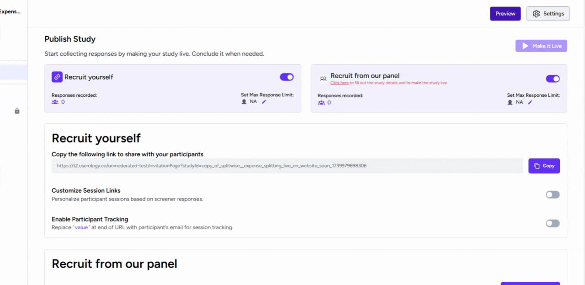
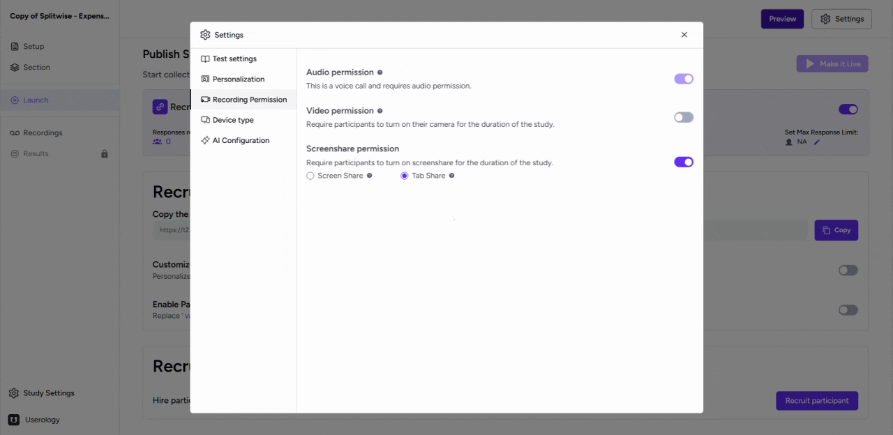

This guide explains how to configure recording and capturing permissions for a study in Userology. Follow the steps below to ensure proper setup and functionality.
Access and Configure Permissions
Steps to Access Permissions
-
Navigate to the 'Launch' tab.
-
Click on the 'Settings' button.
-
Select the 'Recording Permissions' tab from the settings menu.
Configuring Permissions
- Video Permission: Choose this option to always capture video during the study. You can set it as mandatory or optional based on your requirements.
- Screen Share Permission: Decide between full screen sharing or current tab sharing. This feature captures participant actions on the screen.

Preview the changes
To preview your changes :
-
Copy the test link from the "Launch" tab and go to the link.
-
On the test page, click on "Get started"
-
Then you'll be shown the set permissions that you had selected previously.
-
Post selecting the required permissions, you (or the participants) can begin the test normally.

If you need further assistance, email us at support@userology.co